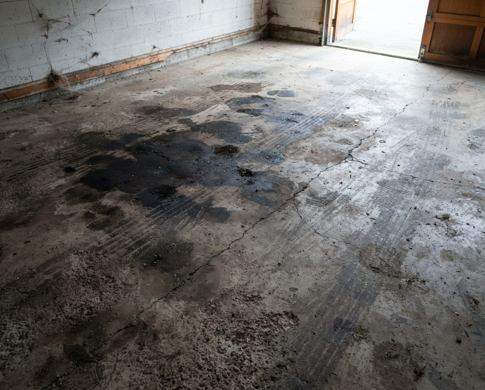
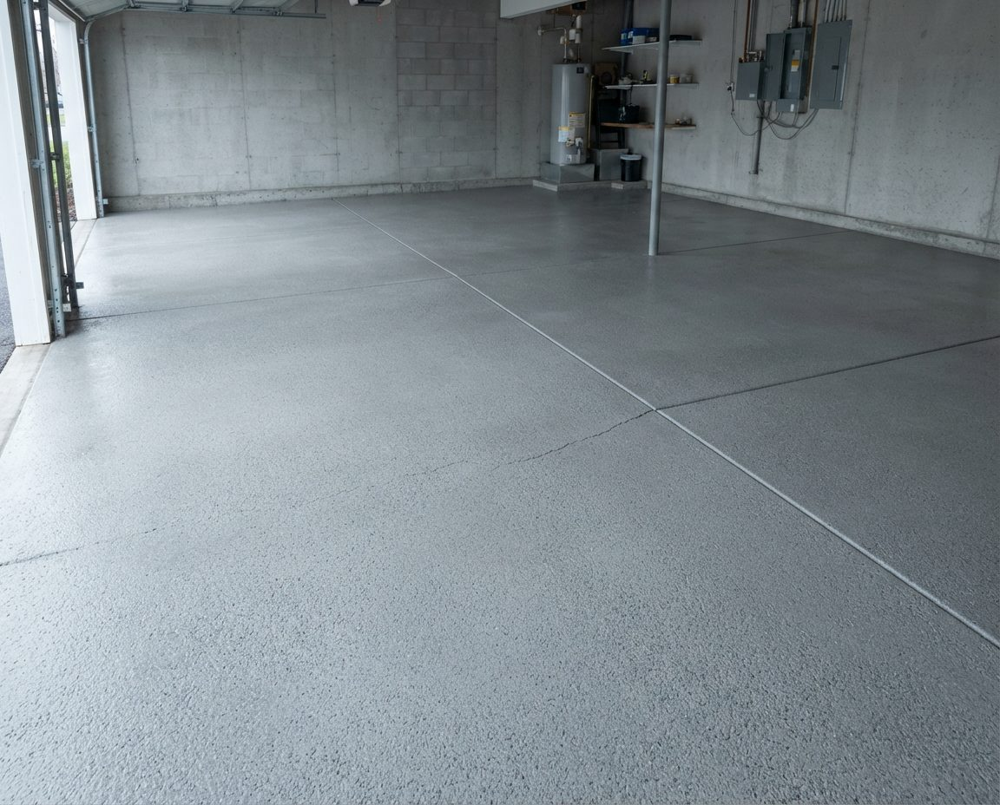

Text us a photo of each stain with a coin next to it. We'll tell you what the stain is, whether it will come out completely or only lighten, how many visits it takes, and what it costs, before anyone books anything.
Most people don't call about an oil stain until something is about to happen. The listing photographer comes Thursday. The move-out inspection is on the 30th. The property manager slipped a note under the door about drips in stall 114. Or you just bought the house, the garage is finally empty, and the previous owner's two cars left two black rectangles where yours will park.
Each of those has a different deadline and a different idea of "clean enough", and a poultice, the only thing that reliably pulls set-in oil out of concrete, takes days, not hours. So the first question we ask isn't about the stain. It's about the date.
One more thing that's specific to right now: Calgary has been under Stage 4 outdoor water restrictions since November 4, 2026, while the City connects the new Bearspaw South Feeder Main. Washing driveways, sidewalks and building exteriors with City water is prohibited, and the City lists fines of up to $3,000 for Stage 4 violations (calgary.ca/restrictions, read November 25, 2026). The method on this page doesn't use a hose, which is why we can keep doing it.
| Your situation | What "done" looks like | Book us by |
|---|---|---|
| Listing the house | A floor that reads as cared-for in a wide photo from the door. A faint shadow is fine; a black patch in the middle of the frame isn't. | At least four days before the photographer, after the garage is empty. Our pre-sale cleanout clears it first. |
| Moving out of a rental | Whatever the move-in inspection report shows. If the stains were noted at move-in, they aren't yours. | Before the move-out inspection, with the car already gone. Landlords, see our tenant cleanout page. |
| A letter about your condo parking stall | What the letter or the bylaw it cites asks for. Usually that's "stop the drip and clean the stall". | Within the deadline in the letter. Ask the property manager first whether you're allowed to treat the stall yourself, since stalls are often common property. |
| You bought the house with the stains | As close to gone as the concrete allows, especially if a coating or sealer is going down next. | Any time, but before a flooring installer comes to grind. |
If the stain is the only thing standing between you and the deadline, say so when you text. A one-day job and a three-visit job need very different calendars.
"Oil stain" covers half a dozen different things on a garage floor, and they don't all come out the same way. Look at the colour, touch the edge with a paper towel, and note where it sits relative to where the car parks.
| What you see | Usually | How we treat it | Realistic result |
|---|---|---|---|
| Black or dark brown patch under the engine, slick if recent | Engine oil | Absorbent on anything wet, degreaser, then a poultice on what has soaked in | Recent: usually gone. Years old: much lighter, sometimes a shadow |
| Reddish or pinkish film | Transmission or power steering fluid | Same as engine oil | Same as engine oil |
| Green, orange or pink, sweet smell, dries crusty | Coolant | Coolant mixes with water, so detergent and a wet-vac lift it. Picked up promptly because it's poisonous to pets | Usually comes out completely |
| Clear to amber, near a wheel, not much smell | Brake fluid | Degreaser and extraction; on a coated floor, check the coating first because brake fluid attacks some finishes | Bare concrete: good. Coating: may already be marked |
| Black arcs where the tires sit, not slick | Tire marks | Degreaser on bare concrete. On a coating we test a corner first | Bare concrete: lightens well. Coatings: some marks are in the finish and stay |
| Orange-brown rings or spots | Rust from shelf feet, steel or fertilizer | A rust remover, not a degreaser | Usually lightens a lot |
| Dull white haze, worst near the door | Road salt, not oil | A salt flush, covered on our garage floor cleaning page | Comes back every winter without sealing |
Two of these behave differently in Calgary. Salt haze often sits on top of an oil patch by late winter, so the stain looks grey instead of black until the salt is off. And in a garage that sees chinook melt, meltwater off the car spreads a thin rainbow of oil well past the original drip, which is why the stain in March is bigger than the one you remember from October.

The usual advice online ends with "then pressure wash". In Calgary this month that advice is out. The City's Stage 4 rules prohibit general outdoor cleaning and washing with City water, including driveways, sidewalks, walkways and building exteriors, and they allow only health and safety exceptions. The City's restrictions page doesn't give an end date as of November 25, 2026.
Here's how we're working inside that:
That last point applies with or without restrictions. The City's Stormwater Bylaw treats soaps and detergents as prohibited in the storm sewer, and oily degreaser water is worse. It goes in our wet-vac, not the drain.
A poultice is a paste of absorbent powder mixed with a solvent. Spread over the stain, the solvent loosens oil sitting in the concrete's pores, and as the paste dries it pulls that oil up into itself. The drying is the part that can't be rushed. Here's a typical set-in stain:
Temperature matters here. Poultice products list a minimum temperature on the label, and an unheated detached garage in a December cold snap can sit below it. If your garage is heated, we'll ask you to keep it on for the drying days. If it isn't, we may move the poultice to a milder day, which is another reason to call us a week ahead of a deadline instead of two days.
Some stains come out completely. Some, especially oil that sat in porous concrete for a decade, leave a shadow no amount of chemistry will lift. A Calgary homeowner who posted a review of a concrete contractor on HomeStars described exactly this: oil and fluid spots from the previous owner's vehicles that degreaser wouldn't move, which they solved by resurfacing the floor. Here's how we think about the choice once the poultice has done what it can:
| What's left | Sensible next step | Who does it |
|---|---|---|
| Nothing, or barely visible | Stop. Optionally seal bare concrete so the next drip wipes off. | Us for cleaning; a sealer can be DIY or an installer |
| A faint, dry shadow | Live with it, or plan a coating. The shadow is cosmetic and won't spread. | A coating installer, after us |
| Oil still wicking up, darkening again after a week | Another cycle. Don't seal or coat over it, because neither will bond to oily concrete. | Us |
| Stain plus spalling, pitting or crumbling surface | The surface is the problem now, not the oil. | A concrete contractor for resurfacing |
We don't install coatings or resurface concrete. If you're heading that way, tell the installer what was on the floor and that it's been poulticed. Most will want to test adhesion on the old stain area either way. If the floor already has a coating, the method changes completely; read our coated and epoxy floor cleaning page before putting any oil remover on it.
A stain job leaves behind used absorbent, spent poultice, oily rags and degreaser water. None of it belongs in your carts, and none of it should go down a drain. What we do with each:
If you'd rather handle the oil yourself, the City's rule is simple: motor oil, filters and oil containers don't go in the blue, green or black cart, and businesses with larger quantities are pointed to the Alberta Recycling Management Authority instead. Check the City's What Goes Where entry for motor oil for current drop-off sites before you drive over. If the garage is full of other leftovers too, our junk removal cost guide explains how a Calgary landfill load is priced.

A stain removed from under a car that still leaks is back by spring. The order that works:
In winter, the mat does double duty. It catches the oil and the slush coming off the car together, so the meltwater doesn't carry oil across the whole floor.
We quote stain removal from photos, and we don't put a single price on it because one fresh drip and two decade-old patches are different jobs. What moves it:
GarageScape carries $2 million in liability insurance and can send proof before the job, which most condo property managers will ask for before we work in a parkade.
Usually they get much lighter, and sometimes they disappear. Oil that has sat in bare concrete for years has soaked into the pores, so it has to be drawn back up, which is what a poultice does as it dries. A long-standing stain can still leave a faint shadow after two or three cycles. We look at the stain before quoting and tell you which result to expect.
It cleans the surface, so a set-in stain looks better for a few days and then darkens again as oil below the surface wicks back up. Pressure washing also isn't an option in Calgary right now: the City's Stage 4 outdoor water restrictions, in effect since November 4, 2026, prohibit washing driveways, sidewalks and building exteriors with City water.
Only fresh oil that is still wet on the surface. Spread it on a new spill, grind it in under your shoe, leave it a few hours and sweep it up. It won't pull oil that has already soaked in. Used litter with motor oil in it shouldn't go in your blue or green cart; ask the City's What Goes Where tool or 311 where yours goes.
Fresh stains and coolant are usually done in one visit. Set-in oil needs a poultice to sit until it dries, often 24 hours or longer, so plan on two visits at least two days apart, and a third if the first cycle only lightens it. Cold slows drying, so an unheated detached garage in a cold snap can add a day.
Inside the garage, yes. Dry prep, absorbent, degreaser picked up with a wet-vac and a poultice don't need a hose or a pressure washer. Stains on the driveway or the apron outside the door wait until the City lifts Stage 4, because washing outdoor surfaces with City water isn't allowed until then.
It can. Solvent-based removers and poultices are made for bare concrete and can dull or soften some coatings. Oil on epoxy or polyaspartic usually sits on top and comes off with a mild cleaner. Dark tire marks on a coating are a different problem and may be permanent. Check your installer's care sheet first, and see our coated floor cleaning page.
No. We need the garage door code or a key, the car parked somewhere else for the length of the job, and you reachable by phone. After the first poultice cycle we send photos of the result so you can decide on a second cycle without being there.
It depends on how many stains there are, how big and old they are, whether the floor is bare, sealed or coated, and how many poultice cycles it takes. Text a photo of each stain with a coin beside it for scale and we quote before booking. Whole-floor cleaning prices are on our garage floor cleaning page.
Selling an estate or downsizing? The oil work fits into the same booking as the clear-out. For everything else we clean in a Calgary garage, start at our garage cleaning services page.
One photo per stain with a coin beside it, one of the whole floor from the door, and the date you need it by. Tell us if the floor is bare, sealed or coated. We'll say what it is, whether it will fully come out, and quote before we book.
Mon–Fri 8–6, Sat 9–4, texts answered evenings too. All of Calgary.